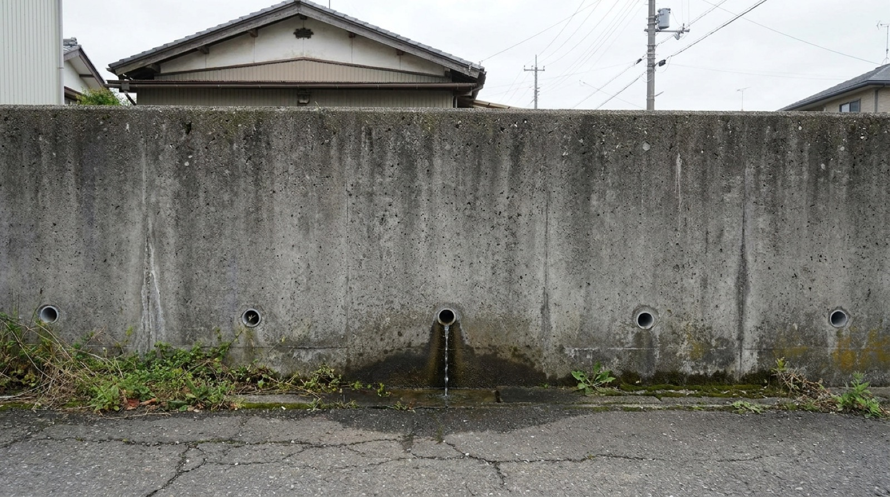
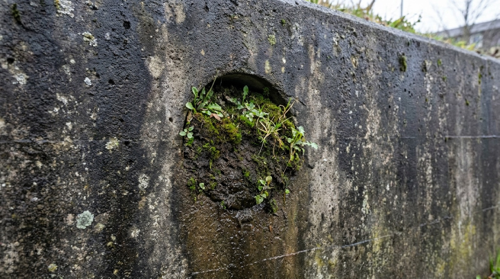
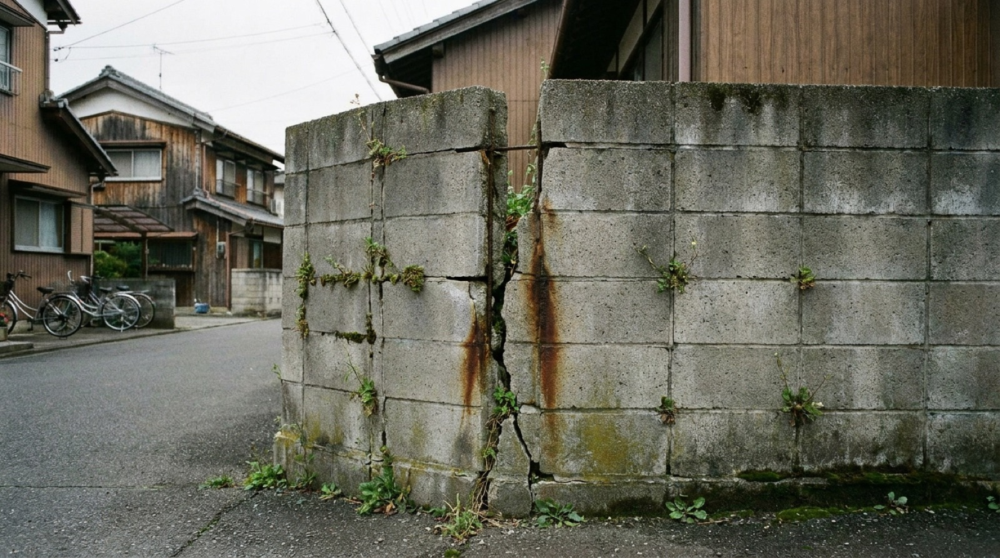

「眺めが良くて、しかも安い土地が見つかった」——うれしいご報告をいただくと、私たちがまっさきに確認するものがあります。擁壁（ようへき）です。高低差のある土地で、土が崩れないように支えているあの壁。ここが傷んでいると、家そのものより先に足元が崩れます。今回は、大工歴43年の社長が危ない擁壁の見分け方を実験つきで話した動画をご紹介します。ポイントは、たったひとつ。水抜き穴です。
動画の中身（見たいところから見られます）
- 00:00はじめに
- 01:40そもそも擁壁とは何か
- 01:41危ない擁壁に共通するポイント
- 03:45水抜き穴がない・効いていないと、どうなるか
- 06:07【実験】水の力が擁壁にかける負担
- 07:23安全な家づくりのためにできること
- 10:07専門家に見てもらう大切さ
- 11:20まとめ
なぜ「水抜き穴」なのか
擁壁の下のほうに、パイプが一定の間隔で並んでいるのを見たことがあると思います。あれが水抜き穴です。見た目は地味ですが、擁壁にとっては命綱です。
擁壁が支えているのは、土だけではありません。雨が降ると、土の裏側に水がたまります。水がたまった土は重くなり、さらに水そのものが壁を押します。この力が、思っている以上に大きい。だから、たまる前に逃がす。そのための穴です。
逆に言えば、水抜き穴がない擁壁、詰まって機能していない擁壁は、大雨のたびに設計以上の力を受けていることになります。ふだんは何ごともなく立っていても、限界を超えた日に一気にきます。動画では、水がどれだけの力で壁を押すのかを実験で見せています。数字で聞くより、映像のほうが早いと思います。

土地を見に行ったら、ここを見てください
専門家でなくても、地上から見て気づけることがあります。候補地に立ったとき、擁壁があればこの5つを見てください。
- 水抜き穴があるか。壁の下のほうに、パイプが一定間隔で並んでいるか。1本もなければ要注意です。
- 穴が詰まっていないか。土や落ち葉でふさがっていたり、逆にいつも水がしみ出して壁が濡れていたりしないか。

- ひび割れ・はらみ。縦に走るひび、前に膨らんでいる部分。壁を横から眺めると、はらみは見つけやすくなります。
- 継ぎ足しの跡。古い石積みやブロックの上に、あとから積み増した形跡。素性の分からない擁壁の代表格といえます。
- 上に何が載っているか。擁壁のすぐ際に建物や車が載っている場合、想定されていない重さがかかっていることがあります。

そして、いちばん確実な方法。高さが2mを超える擁壁は、工作物として建築確認の手続きが必要です。つまり、きちんと造られていれば記録が残っているということ。検査済証の有無は、自治体の窓口で確認できることがあります。逆に、古い造成地では記録が残っていないことも珍しくありません。その場合、家を建てるときに擁壁のつくり直しや補強を求められることがあり、費用は土地の価格に匹敵する規模になることもあります。
「安い」の理由が、ここにあることがあります
以前土地探しの記事でも書きましたが、相場より安い土地には、たいてい理由があります。その理由が自分たちに関係のないことなら掘り出し物ですが、擁壁だった場合、浮いたお金は工事に消えます。しかも擁壁の工事は、買ってからでは選択肢がありません。
ですから、順番はいつも同じです。気に入った土地は、申し込む前に住宅会社に見てもらう。当社では候補地の確認を無料で行っています。他社で紹介された土地でも構いません。擁壁だけでなく、地盤、上下水道、日当たり、ご近所の様子まで見て、建てられるか、いくらかかるかを正直にお伝えします。
「せっかく見つけたのに、水を差された」と思われるかもしれません。それでも申し上げます。土地を売るのは私たちの仕事ではなく、そこで長く安心して暮らしていただくのが仕事だからです。
よくあるご質問
すでに住んでいる家の擁壁が心配です。
まずは地上から、上に挙げた5つを見てみてください。ひび割れやはらみ、いつも濡れている部分があれば、写真を撮っておくと相談が早く進みます。急な変化（ひびが広がった、上の地面が沈んだ）があるときは、様子を見ずにご相談ください。当社でお建てのお客様は、定期点検のときに一緒に見ています。
高低差のある土地は、避けるべきですか？
いいえ。眺めや日当たり、周りから見られにくいなど、高低差ならではの良さがあります。実際に、高台の立地を活かした建築実例10のようなお住まいもあります。大事なのは避けることではなく、素性を確かめてから買うことです。
擁壁の工事にも補助金は使えますか？
お住まいの市町村によって、がけ地の対策工事に対する支援制度が用意されていることがあります。ただし内容も条件も自治体ごとに違い、年度で変わります。該当しそうな場合は、私たちから市町村の窓口を一緒に確認します。住宅本体の補助金については2026年の住宅補助金の記事をご覧ください。

奈良の工務店シバ・サンホームで、初めての家づくりに伴走しています。土地の相談を受けたら、まず現地に立ってみることにしています。モットーはスピード・誠実さ・楽しさ。